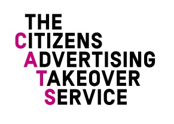

Thanks for being part of the Citizens Advertising Takeover Service!
We hope you enjoy the CATBlock extension, which allows you to replace online adverts with pictures of cats.
Simply install this extension for and hey presto! A takeover right on your laptop.
Please consider disabling it on sites you wish to support.
Thanks again.
Team Glimpse!
